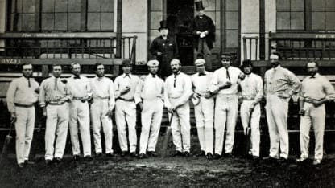
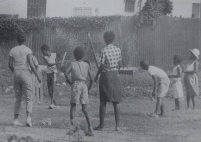
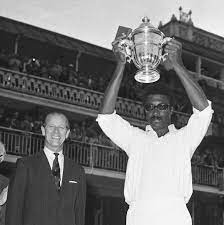

The British Bring Cricket - But Only for the Elite - Cricket arrived in the Caribbean with British colonizers in the early 1800s, first played by white planters, military officers, and wealthy merchants. The game was a symbol of British culture and power, and it was used to reinforce social hierarchies.
Act 1
The Colonial Game
Cricket As A Weapon
00s

Act 1
After Emancipation
Cricket As A Weapon
After emancipation (1834–1838), cricket became a means for formerly enslaved people to assert their dignity and challenge racial hierarchies.
34-

Act 1
The First Black Stars
Cricket As A Weapon
Learie Constantine (Trinidad) emerged in the 1920s—not just as a brilliant all-rounder but as a civil rights icon. He later became Britain’s first Black peer! White selectors deliberately excluded Black players from early West Indies teams. When they finally allowed a few, they refused to let a Black man captain—until 1960!
20s
Act 1
A Humiliating Farce
Cricket As A Weapon
The West Indies played their first official Test match vs England in 1928—and were utterly crushed. The British press mocked them as "calypso cricketers"—entertaining but unserious. But a young George Headley (Jamaica), known as the "Black Bradman", began smashing centuries, proving Caribbean talent was world-class.
28
Act 2
The Revolution
The Three W's
Frank Worrell, Everton Weekes, Clyde Walcott (Barbados)—known as the "Three Ws"—dominated world cricket in the 1950s. Worrell became the first Black full-time captain (1960), breaking the racist glass ceiling. His leadership united the region—Jamaica, Trinidad, Barbados, Guyana—under one West Indian identity.
50s
Act 2
Beyond the Boundary
Cricket as War
Marxist historian C.L.R. James wrote the legendary book "Beyond a Boundary" (1963), arguing that cricket was not just a game but a battlefield for racial and social justice. His famous question: "What do they know of cricket who only cricket know?"—meaning the sport was tied to Caribbean freedom struggles.
20s
Act 3
The Golden Age
The Most Feared Team
Clive Lloyd’s Army of Pace Terrorists - After white South Africa banned the West Indies for having Black players (1970), captain Clive Lloyd (Guyana) decided: "If they want war, we’ll give them war." He assembled the greatest fast-bowling attack ever: Michael Holding ("Whispering Death"); Andy Roberts (the silent assassin); Joel Garner ("Big Bird"); Malcolm Marshall (the deadliest of them all); Colin Croft (who once shoulder-barged an umpire!) They didn’t just beat teams—they broke bones and spirits.
70s
Act 3
Symbol of Black Power
Cricket As A War
Sir Vivian Richards didn’t wear a helmet—out of sheer arrogance. His 189 vs England in 1984* is considered the greatest ODI innings ever. He played with a swagger that terrified bowlers, once saying: "I don't wear a helmet because I want them to know I’m not afraid."
80s
Act 3
The Unbeaten Streak
Cricket As A War
The West Indies did not lose a single Test series for 15 years—a record still unmatched. They won the first two Cricket World Cups (1975 & 1979) with legendary moments like: Clive Lloyd’s 102 in the 1975 final; Viv Richards running out three Englishmen in 1979
80-

Act 3
Revolts & Betrayals
The Fall Begin
Greed and politics tore the team apart in the 1990s. The West Indies Cricket Board (WICB) underpaid players, leading to strikes and walkouts. Brian Lara, the last great superstar, broke world records (375 in 1994, 400 in 2004*) but played in a declining team.
90s
Act 4
T20 Revolution
A New Hope
The Caribbean Premier League (CPL) brought back excitement. West Indies won TWO T20 World Cups (2012 & 2016) with Carlos Brathwaite’s "Remember the Name!" moment. But Test cricket is still dying in the region—fans now care more about party-style T20s.
10s
Act 4
Decline
The Dark Ages
Board mismanagement: The WICB (now Cricket West Indies) became one of the most corrupt bodies in sports. Player exodus: Stars like Chris Gayle, Dwayne Bravo, and Andre Russell chose T20 leagues (IPL, CPL) over Test cricket because the board paid peanuts. Humiliations: Being bowled out for 47 vs England (2004), losing to Zimbabwe & Bangladesh, and failing to qualify for the 2023 ODI World Cup.
10-